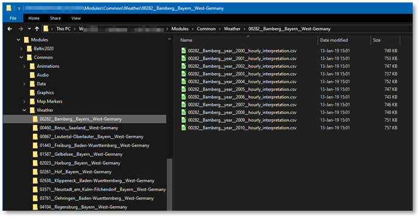
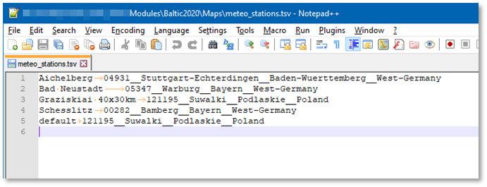
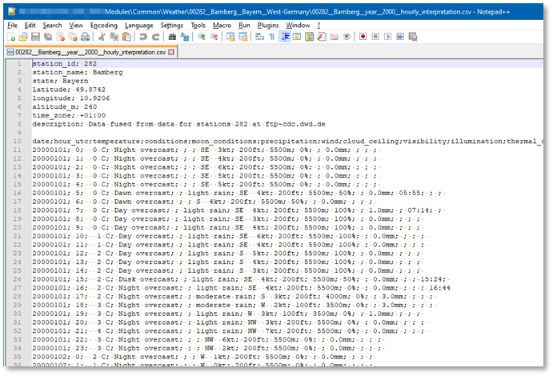
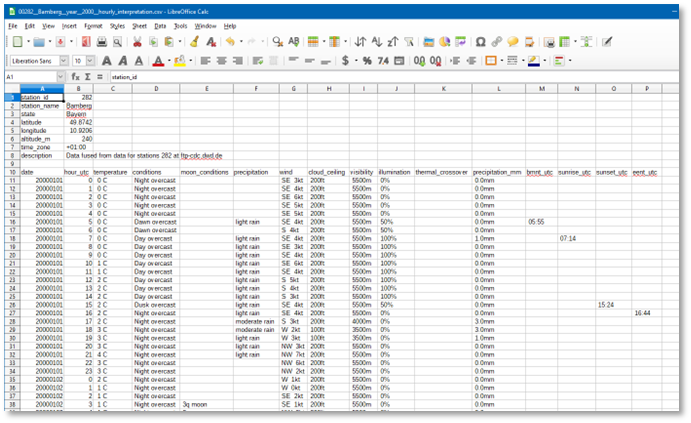
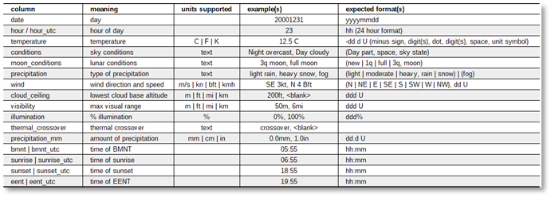

Weather Data Files
The weather data is stored in folders and files as part of Flashpoint Campaigns’ game data.
The weather data is stored under Modules/Common in the Weather subfolder. The Weather subfolder also contains a font file defining weather icons (weathericons-regular-webfont.ttf’).
In addition, the Modules/Maps folder contains a ‘meteo_stations.tsv’ file defining the preferred weather station for each map.

Weather Station Folders
Under the Modules/Common/Weather folder, each weather station has its own folder. The weather station folder can have any name. Its only contents should be weather data files.
Weather Data Files
In each station folder under Modules/Common/Weather, there should be at least one weather data file containing one year of hourly weather.
The format for hourly weather data files is: *_year__####_*.csv. In words, the filename should contain a part ‘_year_’ followed by the year (as four digits) and be a .csv file. For example, ‘00282__Bamberg__year__2010__hourly_interpretation.csv’.
See below for its contents.
Map to Weather Mapping File
In each Module’s Maps folder, there is a file ‘meteo_stations.tsv’ file. Its contents look like this:

The meteo_stations.tsv file is a tab-separated file, containing two columns. To the left, the map name (without folder, and without file extension). On the same line, on the right of the tab character is the corresponding folder name for the meteo station. For example, on the 3rd line, for map ‘Graziskia 40x30km’ the recommended weather data is in folder ‘121195__Suwalki__Podlaskie__Poland’.
The final entry is a special one, indicating the default weather station for maps not explicitly listed below.
NOTE: when editing this file, take care to separate the map name and meteo station with a tab character. Make sure to use a (free) programmer’s editor such as Notepad++ or Visual Code to do this; the default Windows’ Notepad will not display a difference between tabs and spaces.
Weather Data File Contents
The weather data of each weather station is defined by *_year__####_*.csv semi-colon separated files, one for each year. Its contents look like this (as a text file):

The .csv semi-colon separated files are better loaded and inspected in a spreadsheet application such as LibreOffice Calc or Microsoft Excel (after indicating that the semi-colon is the separator):

After a header and a blank row, the bulk of the data follows, in 16 columns. The first row defines the header and is followed by 365 or 366 days of 24 hours of weather.
The table below describes each columns meaning, supported measurement units, and expected format:

Note
-
In the current version of Flashpoint Campaigns, the thermal crossover column is ignored, and thermal crossover is assumed to occur during dawn and during dusk.
-
In the current version of Flashpoint Campaigns, the illumination column is ignored, and illumination is computed based on day phase (Night), lunar phase, and cloudiness.
-
The ‘hour_utc’, ‘bmnt_utc’, ‘sunrise_utc’, ‘sunset_utc’, and ‘eent_utc’ column names are being replaced by just ‘hour’, ‘bmnt’, ‘sunrise’, ‘sunset’, and ‘eent’, to avoid the suggestion these are time zone specific.
Weather Data File Contents Rules
The weather data file contents must conform to the following rules, in order to be a valid weather data file accepted by the game.
(a) The file should have a header part, followed by a blank row/line, followed by the data part.
(b) The header part should not contain blank rows/lines
© The data part should consist of a single header row, followed by 365 days (or 366 days, for leap years) of 24 hours of weather data
(d) The header row should contain column names, separated by semi-colons
(e) The data rows should be in order of day and hour, covering each hour of the year in sequence
(f) The ‘moon conditions’ column shall be blank if ‘conditions’ column does not include ‘Night’ (it still can be blank for ‘Night’)
(g) Precipitation is blank, fog’, or gradation of either ‘rain’ or ‘snow’; valid gradations are ‘light’, ‘moderate’, and ‘heavy’.
(h) Precipitation amount should follow the precipitation gradation that is amounts for moderate precipitation should be greater than for light precipitation, etc.
(i) Wind direction is mandatory, even for 0m/s speed wind.
(j) Cloud ceiling can either be blank (no clouds) or should be a number greater or equal to 0 height.
(k) Illumination should be 100% for ‘day’. We use 50% for ‘dawn’ and ‘dusk’, and 0% for ‘nights’ without moon or overcast ‘nights’, and 40% for full moon clear ‘nights’.
(l) Thermal crossover currently is ignored by the game.
(m) A single bmtn entry should be filled out per day, in the corresponding hour’s row, and the same row should be tagged with ‘dawn’ conditions. For example, a 4:59hrs BMNT should be put in the hour ‘4’ row, along with ‘Dawn’ in the conditions.
(n) A single sunrise entry should be filled out per day, in the corresponding hour’s row, and the same row should be tagged with ‘day’ conditions. For example, a 5:59hrs Sunrise should be put in the hour ‘5’ row, along with ‘Day’ in the conditions.
(o) A single sunset entry should be filled out per day, in the corresponding hour’s row, and the same row should be tagged with ‘dusk’ conditions. For example, a 15:59hrs Sunset should be put in the hour ‘15’ row, along with ‘Dusk’ in the conditions.
(p) A single eent entry should be filled out per day, in the corresponding hour’s row, and the same row should be tagged with ‘night’ conditions. For example, a 16:59hrs EENT should be put in the hour ‘16’ row, along with ‘Night’ in the conditions.
Note that the game does not impose consistency checks on the data: if the data says ‘fog’ and ‘visible: 10000m’, it will happily accept that.